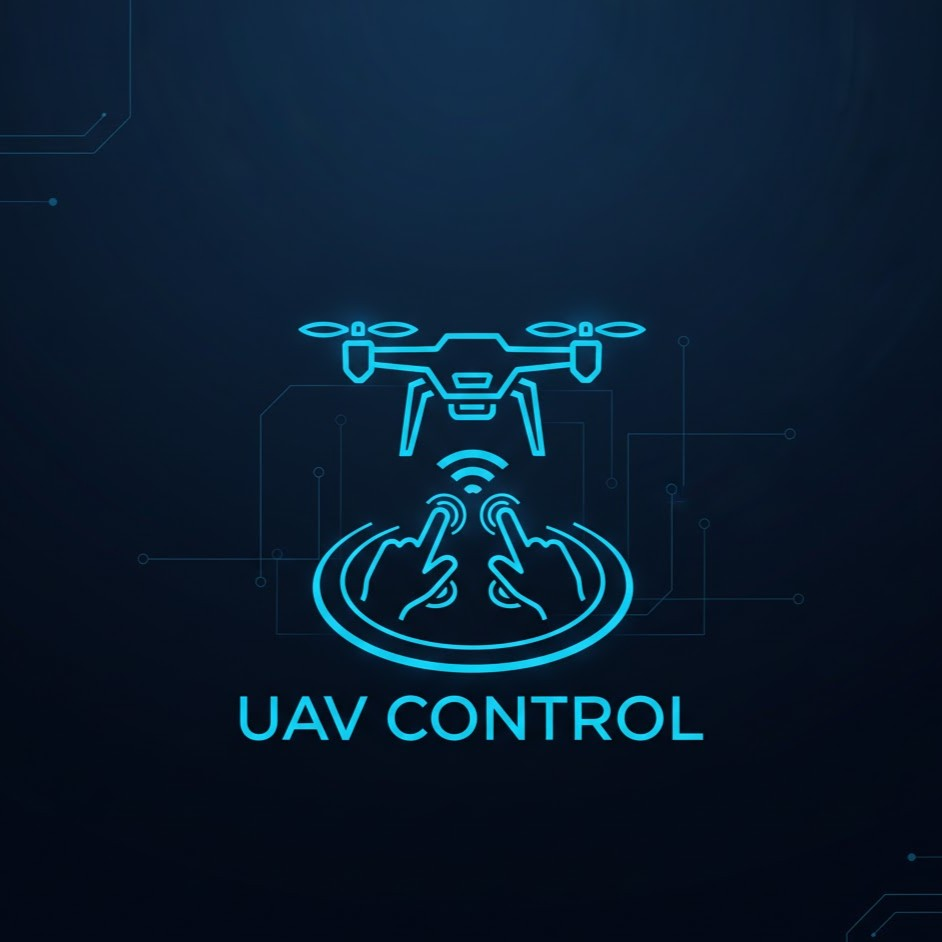

無人機控制
UAV Control
專注於多旋翼機與定翼機的飛行控制演算法開發。 結合強化學習 (RL) 、仿生演算法與各式控制演算法，實現異質載具協同作業、動態環境導航及抗強風干擾之強健控制。

嵌入式系統
Embedded Systems
基於 ESP32、STM32 與 jetson 系列平台，實現各式系統與輕量化AI運算。整合無線電力傳輸 (WPT) 與高速通訊技術，開發應用於物聯網 (IoT) 與即時控制的高效能硬體系統。

人工智慧
Artificial Intelligence
結合電腦視覺與深度學習技術，解決複雜的感知與決策問題。重點包含小目標偵測、受遮蔽人臉辨識、3D 光達感測及強化學習在機器人控制上的應用。

生醫科技
Bio-medical Tech
主打「非接觸式」生理訊號監測技術。利用影像處理與神經網路，實現遠端心率與呼吸偵測，並應用於智慧跑步機、氣壓床等健康照護與運動器材控制。

音訊處理
Audio Processing
專注於數位訊號處理 (DSP) 與適應性濾波演算法。研究主動式抗噪 (ANC)、語音增強與聲源定位技術，致力於提升通訊品質與人機互動的語音清晰度。